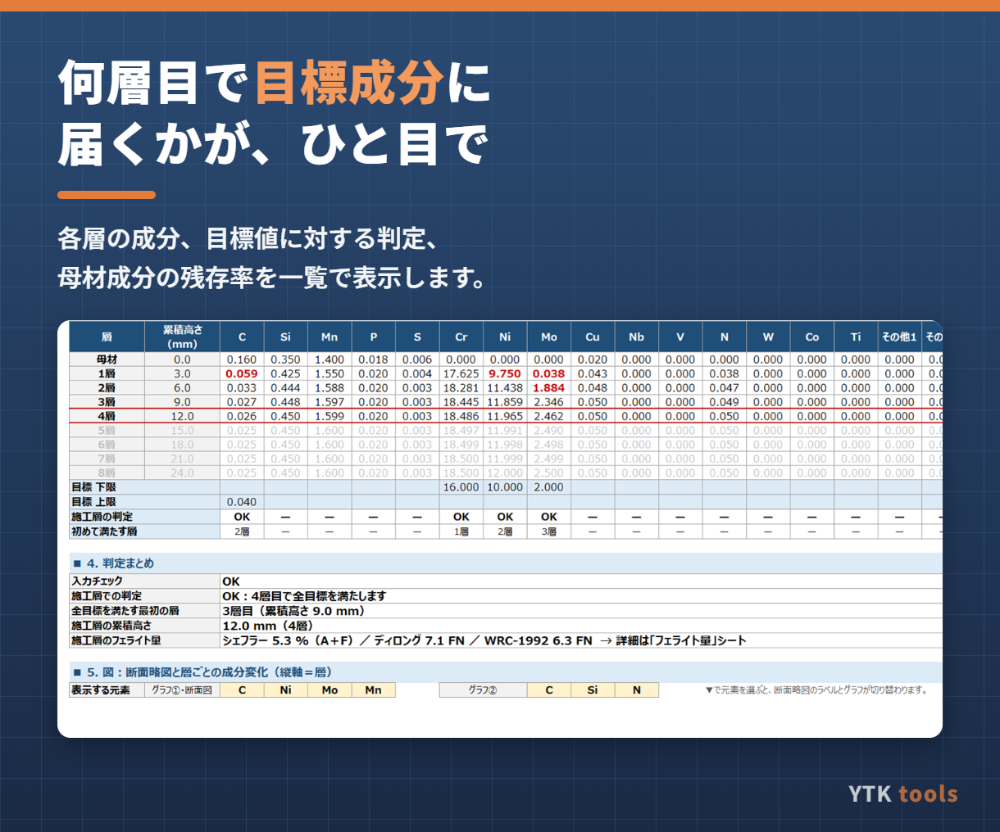
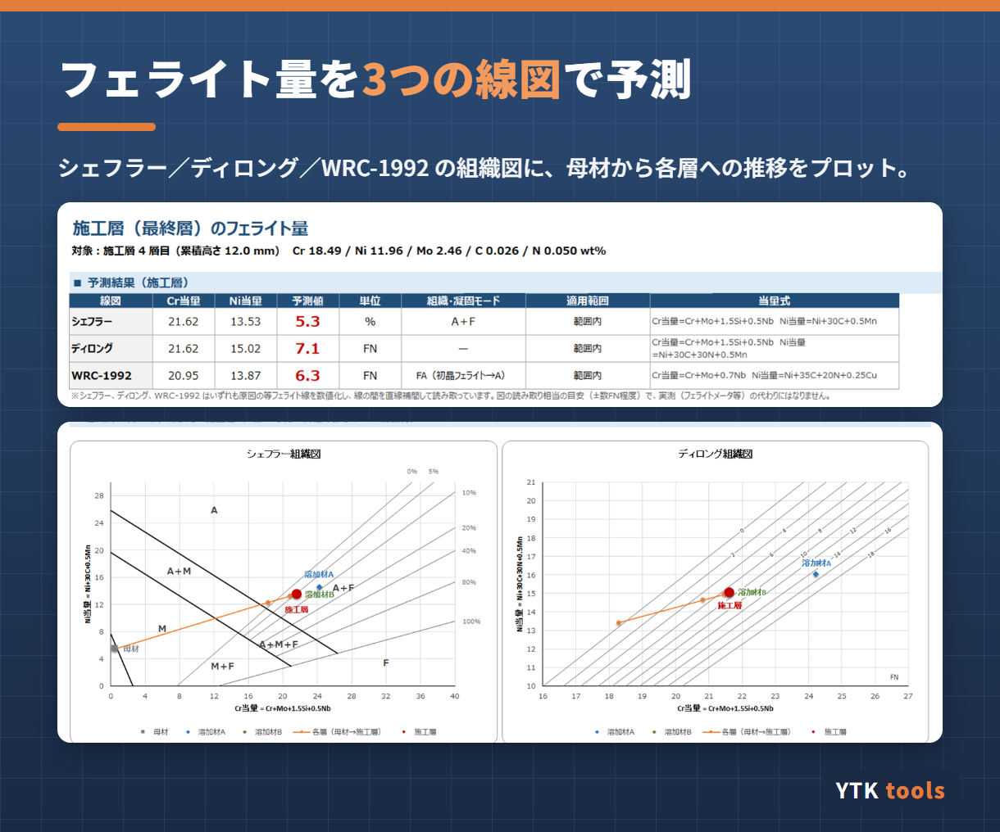

こんな場面で使えます
- 肉盛溶接（オーバーレイ・クラッド溶接）の施工計画で、何層盛れば表層が目標成分に届くか見積もりたい
- 炭素鋼・低合金鋼にステンレスやニッケル基合金を肉盛するときの希釈の影響を確認したい
- 層ごとのCr・Ni・Mo・Cなどの成分変化と、フェライト量（FN）を一覧で見たい
- 手計算や自作シートでの検討を、毎回同じ形式で残したい
主な機能
- 各層の成分を「前の層 × 希釈率 ＋ 溶接材料 ×（1−希釈率）」で順に計算（母材＋最大8層）
- 層ごとに希釈率・層厚・溶接材料（A/Bの2種類）を設定可能
- C・Si・Mn・P・S・Cr・Ni・Mo・Cu・Nb・V・N・W・Co・Ti など17元素＋Fe（その他2元素まで追加可）
- 目標成分の上限・下限を入れると、施工層での判定と「初めて目標を満たす層」を表示
- フェライト量をシェフラー組織図・ディロング組織図・WRC-1992図で算出し、図上にプロット
- 断面略図と、層ごとの成分変化グラフ


仕様・動作環境
| 形式 | Excelファイル（.xlsx）。マクロ不使用で、数式とグラフだけで動きます |
|---|---|
| 動作環境 | Windows版 Microsoft Excel（2016以降／Microsoft 365） |
| お届け | ご購入者のお名前（会社名）を記入したライセンス入りファイルをお送りします |
| 価格 | 3,000円（税込）・買い切り |
| 作成者 | YTK tools（溶接技術管理者 WES 特別級が作成） |
計算結果は施工計画・検討用の目安です。合否は化学分析やフェライト量測定の実測でご判断ください。